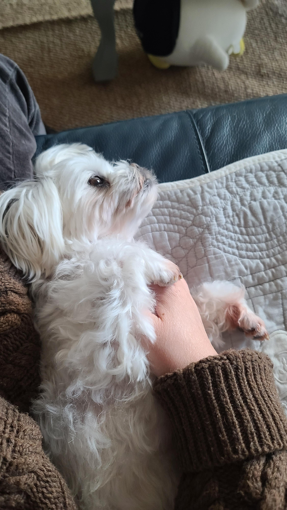
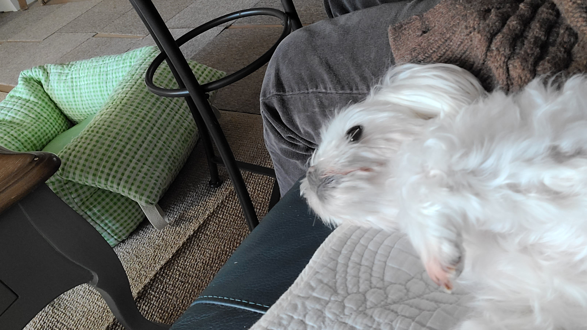
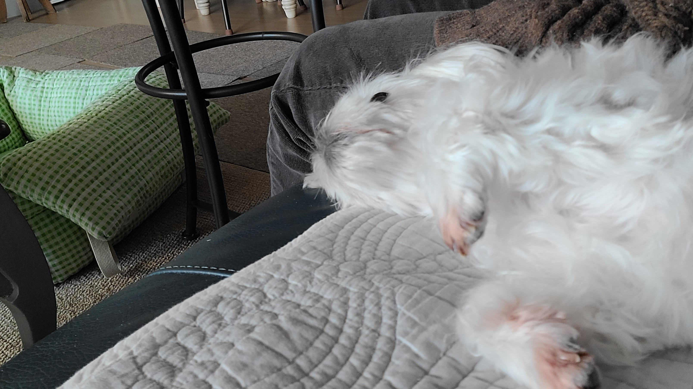
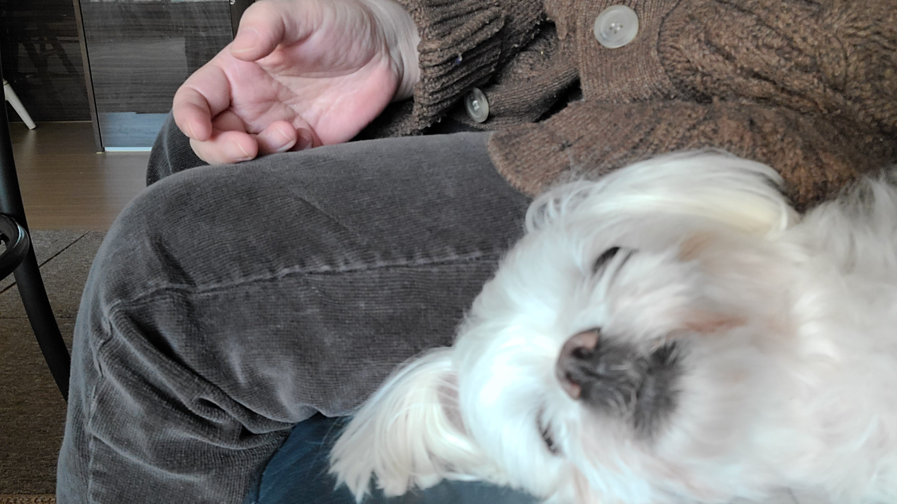
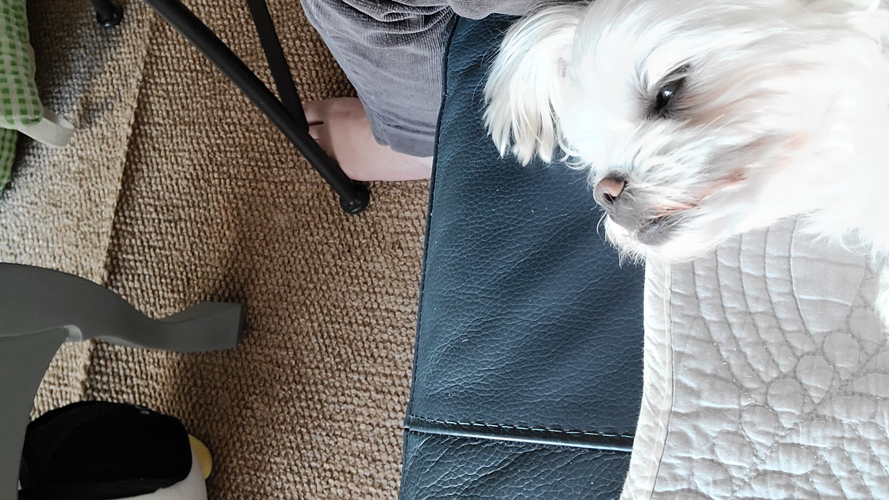
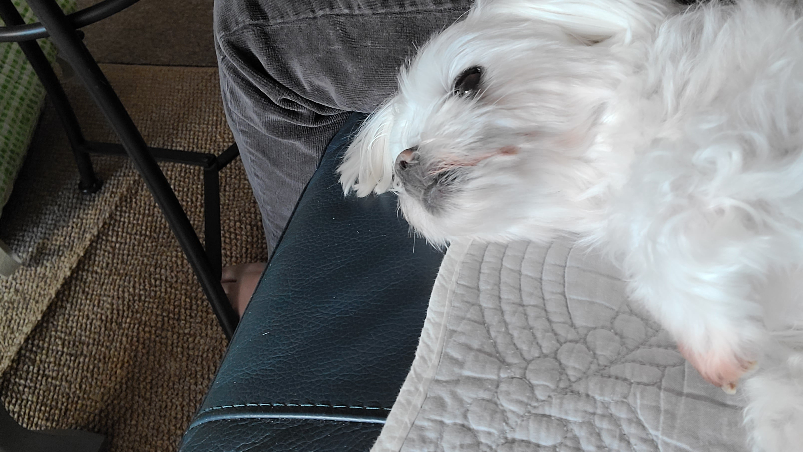
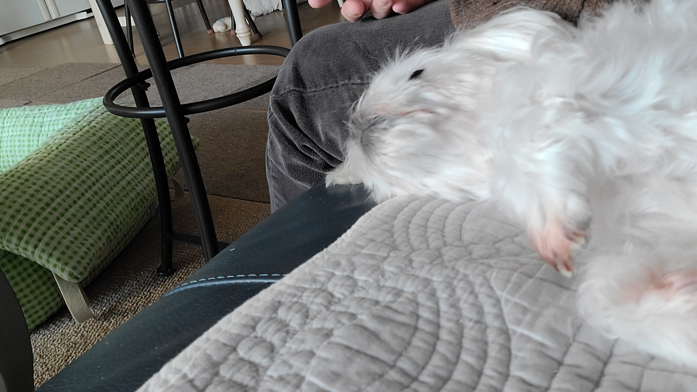
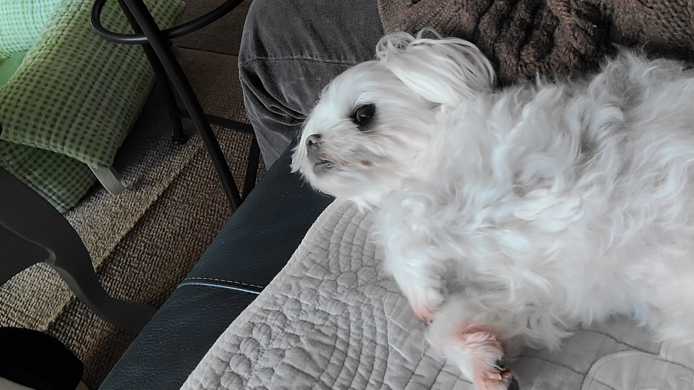
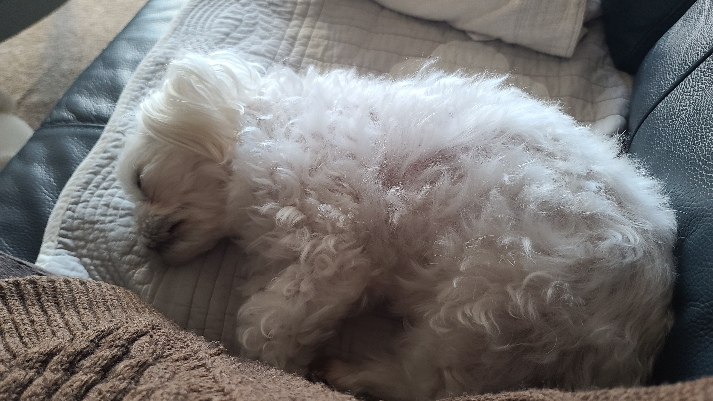
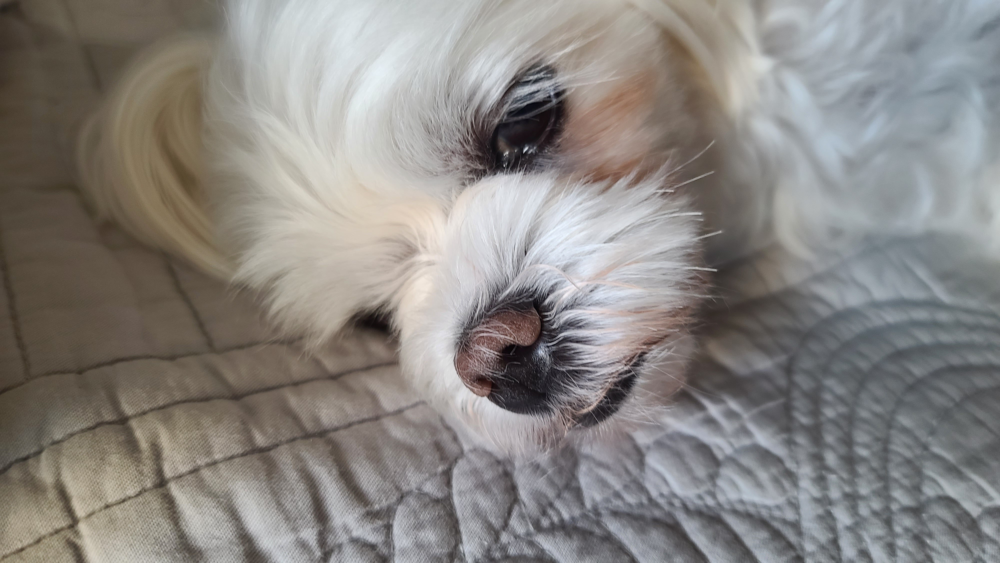

꾸벅꾸벅 조는 것
강아지니까 그냥 졸리면 바로 자면 되는데
꼭 안 잘려고 버티면서 꾸벅꾸벅 졸다가 잠듦










꾸벅꾸벅 조는 것
강아지니까 그냥 졸리면 바로 자면 되는데
꼭 안 잘려고 버티면서 꾸벅꾸벅 졸다가 잠듦
출근하면 못보니까 있을 때 조금이라더 더 볼려고....
아 눈물나게 하지 마 ㅜㅜ
작년 6월에 떠난 우리 꽁치가 보고싶다...


그냥 별 생각 없어보이는데
우리집개도ㅋㅋㅋㅋ
너 급한일 없잖아...
졸지말고 그냥 자라...
당사자한테 물어보면 친절하게 대답해주지 않을까?
주인이랑 놀아줘야 하는데.. 놀아줘야하는데.. zzz
아기 고양이나 오리도 그러던데 ㅋㅋ
사람도 그래
주인 혼자 냅두면 심심해한다고
이때가 제일 상호작용하는시간이니까 소중한거지 ㅋㅋㅋ
할일한다고 신경도안쓸때도많은데 나한테 신경써주는시간
예전에 나도 디아3할때 그냥 자면 되는 데 굳이 졸면서 함 ㅋㅋㅋㅋㅋ
개랑 같네
아니 욕이 아닌 데 왜 욕같지...
개랑 동급
개같네 정말

이런 강아지같은
대충 화면에 뜬 죽었습니다 짤
말티즈 1 짤 처럼 몸 옆에 누워있을때 몸통 긁어주면 스르륵 잠듬 ㅋㅋㅋㅋㅋ 뒤지게 귀여움
아들딸 키울때도 비슷함
좀 자라고 시부랄
너도 어릴 때 잠들면 엄빠랑 헤어진다고 생각해서 졸려도 참고 꾸벅꾸벅 졸았음
몰래 어디갈까봐 그런가벼
사진에 강아지 귀엽네 ㅋㅋㅋㅋㅋ
혹시 무지개다리 건너기전에도
지금 자면 안되는데 엄마 아빠 더 보고싶은데 왜 이렇게 졸리지? 하는걸까?
주인 얼굴 계속 보고싶으니까
아무 조건도 없이 나만 사랑해 주려고 ㅠㅜ
버림 받을까봐
아빠안잔다